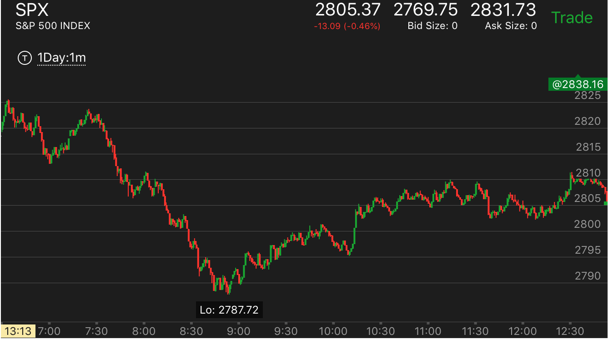
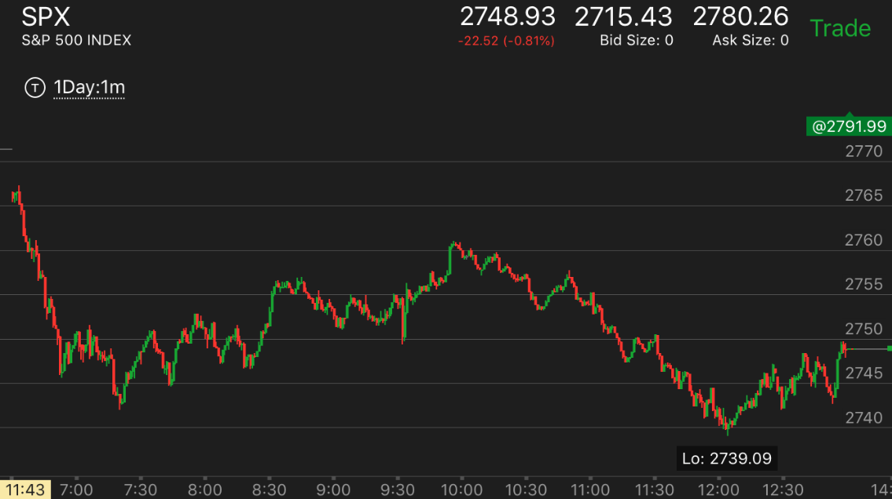
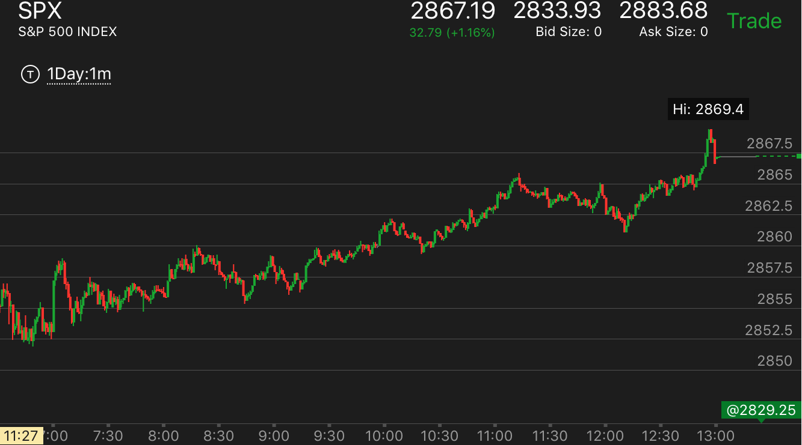
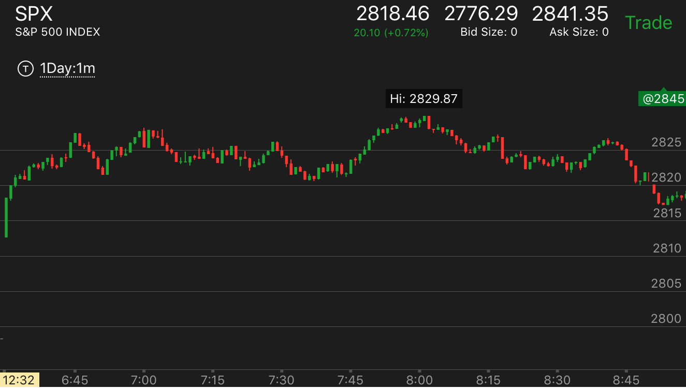

底部或者顶部的加速走势
底部加速走势
顶部加速走势
不是顶部加速走势，看起来类似
底部加速走势
TOP
关键在于在底部反弹幅度不大，不会填补真空，要注意真空的在不同规模上的定义。

图示：从8：20开始不断的缓慢下跌。虽然下跌缓慢，但是总体看，制造出来一个很大的真空。
9：00开始出现了一个5浪走势。这个5浪反弹不大，没有填补真空。然后大跌，创新低。可以想到，这个走势已经在底部了。还要再跌，就底部的形成。
它第一浪反弹很大。速度很快。再次下跌。好像显得要持续下跌一样。同样分析，前面已经到了底部，一定要有一个像样的上涨才对。
果然它在10：50走出了走平后下跌的走势，大幅反弹。

图示：
1. 刚刚开盘后的大跌，因为没有根基,下跌后，它也没有回调，而是开始走平后，不断走低。这样就形成了底部。它反弹的时候，每次反弹都拉回一些。
这样速度比较慢。一定会回到高点。它在最后的上涨中，出现了走平后冲高的走势。虽然超过了高点，也到了头部。
2. 9：20大幅下跌，它立刻大幅反弹。用了一个两段走势反弹。这样就反弹结束了。
3. 10：35从最高点连续大跌。然后开始缓慢下跌。这样就形成了一个真空而没有填补。而它却不断走低。这样形成了底部。

图示：7:30开始的下跌。速度不快。而且回调填补了真空。它下跌后，震荡时间很长。大约30分钟。
可想而知，这个走势会很强。不会轻易反转。8：10连续下跌后，它没有反弹，然后不断下跌。这样就形成了底部加速。
但是要注意这个底部很长。一口气跌了20个点。然后才缓慢反弹。它后面上涨时间超过3个小时。但是也只是填补了真空而已。没有突破。

图示：7:50的下跌没有填补真空。震荡时间很短。再次下跌。这么短的走平时间。说明这个跌势不是很强。
9：10它在底部走平很久。反弹一直没有超过前面的真空点。然后再次走低。这个就是底部加速了。
可以看到它9：20第一浪反弹，立刻回调。这个和下跌比较起来，速度很慢。这样可以预计它最后一定会超过下跌点的。
从另外的角度看，它上涨的速度非常的慢，用了2个小时。而前面下跌的真空点2812.5走平时间很短。所以这个真空会被打破。大盘在11：45回调后，
快速大涨。突破真空点。

图示：开盘后，分别在2760，2757，2754，出现了走平或者反弹的走势。这样就制造了几个区间。
从2757的高点看，它下跌后，基本没有填空。就继续下跌。跌倒2748后，反弹一些，再次下跌。形成了底部加速。
但是要考虑到，这个底部加速是相对于2757这个点来说的。所以它可以反到2757以上。但是没有办法超过2760.
后来的反弹果然证实这一点。
假的顶部加速走势
TOP
顶部加速一定要有长时间的走平，然后再次上涨，如果持续上涨，那么不是顶部加速走势。

图示：
9：10上涨后，回调不大，开始震荡，然后继续上涨。它上涨后，立刻回调。然后再次上涨。看起来似乎是顶部加速。但是这个不是。它没有在高点走平或者震荡很久。
从小走势的角度看，它也没有出现典型的顶部特征。
顶部加速走势
TOP
底部加速造成上涨，造成更大走势的顶部加速，实现全天走势的反转。

图示：
1. 开盘后出现两段上涨走势。这样应该处于跌势。然而可以看到。大盘一直没有低于前面走缓慢的地方。
7：30大盘连续走低后，走平，再次走低。这样就形成了底部加速。
2. 它从底部反弹后，第一浪很小。说明它一定会超过大跌的起点。它果然大涨。但是大涨后，它的第二浪太大了。
而且没有回调，7：50它继续冲高，然后回调很小，再次冲高。这样就形成了顶部加速。这个小的走势也结束了。
3. 但是从更大的时间上看，它在开盘的两段走势冲高后，一直没有回调过走缓慢的地方。反而再次冲高。
这样意味着顶部加速。也就是开盘建立的走势的全面反转。它一定会跌破开盘点的。

图示：开盘后，一直上冲。但是没有像样的回调。10：40的回调时间很短。不能算要给回调。
在顶部长时间走平震荡后，12：10它冲高。形成了顶部加速走势。这样它走出了低点更低，高点更低的走势。2：00大跌。几乎跌回原点。

图示：10：15出现了两段上涨走势。它在10：40走平然继续走高。
稍微回调后，没有回调到位。继续走高。这样就是一个顶部加速的走势。它的顶部很窄，只有一分钟。好像是
不平衡走势。但是在顶部加速的情况下，这样的走势足以构成顶部。不需要在顶部停留很久。